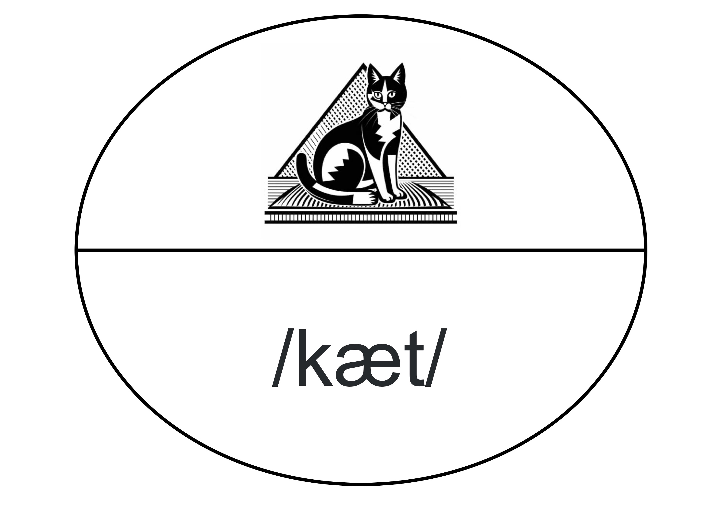
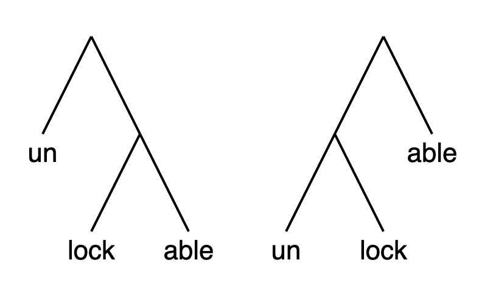
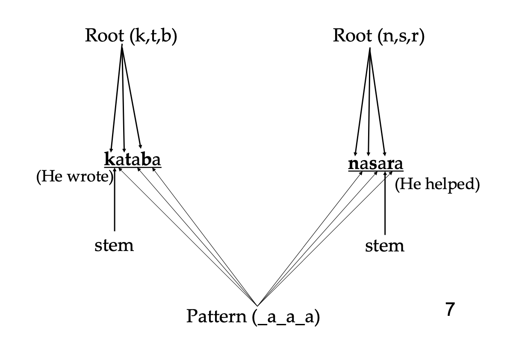
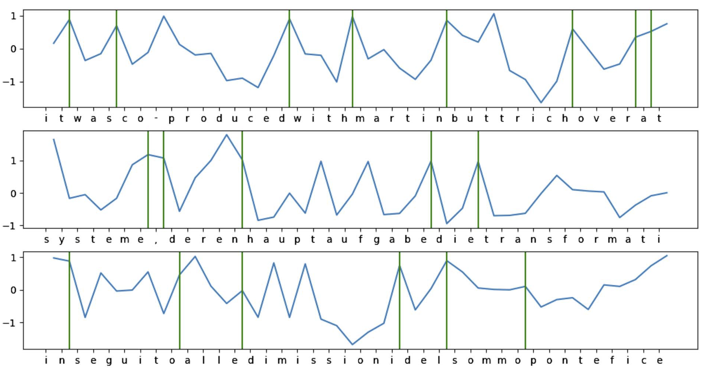
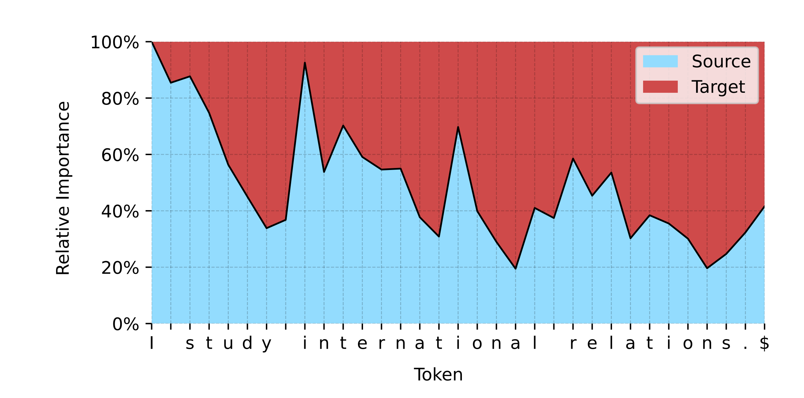

Week 4. Grammar I: Morphology#
TL;DR [slides]
Morphology as a study of words and their parts, morphemes.
Word vs. morpheme: a sometimes complicated distinction
Other traditional distinctions:
Free vs. bound morphemes;
Roots vs. affixes;
Open- vs. closed-class morphemes;
Derivational vs. inflectional morphology
Positional types of affixes
Morphological types of languages: fusion and syncretism
Morphology and language technology
Source acknowledgement
This class follows the logic and general structure that’s a mix from MIT undergrad Intro to Linguistics, CMU Multilingual NLP course morphology lectures. Some examples are taken from these sources, some other examples come from Kibrik et al. 2019. Introduction to Language Science (in Russian) and Plungian. 2003. General morphology (in Russian).
Words and morphemes#
This week we are moving from the immediately observable side of language – its sound or other modalities – to its deeper, not immediately visible organization: grammar. We will be looking at how words are put together into phrases and sentences (syntax), and how words are built from even smaller parts (morphology). We start with morphology.
Important notion
Morphology studies words and their internal structure.
Intuitively, we all know what words are. In fact, knowing the words of a language – and consequently, being able to tell a word from a non-word or from a bigger or smaller unit – is part of knowing the language. A typical word has a bunch of properties:
In written text, it’s separated from other words by white spaces.
In speech, it has one main stress.
It describes a single idea / concept.
It has autonomy that smaller units don’t have: it can be an utterance by itself (for example, as an answer to a question) and can occupy different positions in the sentence, not glued to any other word.
Together, these properties outline very clear words. But we should be careful relying on these particular properties as definitions. Let’s look at the sentence below:
Some words clear -- is, hilarious and she are definitely words according to all the properties above -- apart from maybe she and is, not so sure what the concepts behind them are. But what about the rest? Those are not obvious.
Is kinda one word – or does the fact that the full version – kind of – is spelled with a space between its parts make this decision suspicious?
What about mother-in-law – one word or three?
Same question – one word or more? – for Juniper’s and isn’t.
In these – and other – more complicated cases not all of these criteria are equally helpful.
The general down side of the orthographic criterion is that it makes sense only for written languages – and, as we discussed before, only half of languages are written. Certainly the other half has words too!
The semantic definition is not very reliable either – at least until we have a better definition what a single idea is and how to tell it from a combination of ideas or parts of ideas (recall that we mentioned this problem before when discussing whether it’s realistic to have a purely ideographic writing system).
The phonetic and distributional criteria are more widely applicable. They can say something interesting in problematic cases! For example, ’s and n’t can’t carry their own stress – simply because they have no vowel to put it on – and so they are not autonomous in that they can’t appear on their own. At the same time, ’s has freedom that n’t doesn’t: it can be separated pretty far from the word it’s related to (The guy from the gym’s phone number is a well-formed sentence in English), while n’t is stuck right next to is.
Language is full of intermediate cases like ’s and others (often referred to as clitics in the literature). In some cases, there is no obvious answer whether something is a word or not. The vagueness of this boundary between words and units of other sizes corresponds to the vagueness of the division of labor between morphology and syntax. In some cases, a closer look would help us make this decision, but in other cases it will only highlight the true complexity of this boundary. We will do our best to be as precise as possible where we can! What’s important here is the general intuition that the connections between morphemes within a word are generally more tight than the connections between words in a sentence (the latter are studied by syntax, or next topic.)
Important notion
Morphemes are smallest meaningful linguistic units.
Why do we need to say ‘meaningful’ in this definition? This is to differentiate them from other units that we studied before – sounds and syllables, the building blocks that language uses to make units that grammar operates with – pairings of sound and meaning. This is what morphemes are.
It’s worth noting here that meanings of some morphemes are easier to pin down than others. When talking about morphemes as meaningful units, you will often see these kinds of diagrams:
{kind=link}
But nobody draws something similar for ‘s, -ed or -ity. Do those morphemes even have meanings? They do, but their meanings are much harder to formulate. We will talk about them during Week 6.
Let’s move on to some notions and distinctions important in the field of morphology. Almost none of them are clear-cut or even make obvious sense. I’m not going to pretend they do when they don’t – but we need to know what people talk about when they use these terms, so hold tight.
Free vs. bound; roots vs. affixes; open- vs. closed-class#
The first distinction between different types of morphemes that is often drawn is free morphemes vs. bound morphemes.
Important notions
Free morphemes can constitute words by themselves, without any other morphemes.
Bound morphemes are never words by themselves but are always parts of words.
When we say a morpheme is free and can be a word by itself, we mean that it has the autonomy properties a word has, including the power to be used in isolation as an utterance (but keep in mind the caveat in the previous section!) and/or to be linearly separated from the item it’s related to.
Examples of free morphemes are typically roots – cat, nice, walk and so on; examples of bound morphemes are usually affixes like -ed, anti-, -less etc.
Don’t these distinctions then describe the same thing? Not really. In a language with not much morphology – like English – it is tempting to just say that roots are always free and affixes are always bound, but in languages that require you to specify a lot of grammatical information on most words in any context, you don’t often see roots without affixes expressing this information attached. In those languages, the distinctions free vs. bound and roots vs. affixes are misaligned. Well, affixes are still bound, but roots – a lot of them! – are bound too. For instance, in Latin, a lot of nouns always come with non-empty case and number markers, so you never see the root lūn- ‘moon’ without some other morpheme accompanying it. According to the definition above, this root then is bound rather than free.
Sg |
Pl |
|
|---|---|---|
Nom |
lūn-a |
lūn-ae |
Gen |
lūn-ae |
lūn-ārum |
Dat |
lūn-ae |
lūn-īs |
Abl |
lūn-ā |
lūn-īs |
Let’s say something slightly more accurate:
There are words that contain more than one root – these are compounds like toothbrush, for example. There are words that contain just the root – for instance, tooth. There are words that contain a root and an affix, as in brush-ing. But there are no words that only contain affixes.
This is helpful in more accurately connecting the root vs. affix distinction to the distinction between free vs. bound morphemes. But is this really what roots are? Things that every word has?
Maybe that’s all we can really say. Sometimes, you will see that roots are defined semantically, as a morpheme that ‘carries the main content of the word’. As it’s often the case with strategies of reducing a complex linguistic construct to meaning-based properties, it works in some cases relatively well and doesn’t work so well on a larger scale. Even if we assume that we know what ‘the main content of the word’ is, languages distribute types of information encoded by linguistic units between roots and affixes in different ways.
As an example, let’s compare two words that have the same meaning: zagryzt’ (Russian) and yatha (Lakota). Both mean ‘gnaw; bite to death’; both contain an affix (more specifically, a prefix, see below), but the way this meaning is packaged in the word and distributed between the affix and the root is different:
Russian zagryzt’ |
‘gnaw; bite to death’ |
prefix za- |
‘completely; to death’ |
root gryzt’ |
‘bite’ |
Lakota yatha |
‘gnaw; bite to death’ |
prefix ya- |
‘cause something using teeth’ |
root tha |
‘die’ |
The part of meaning ‘using teeth’ is conveyed by the root in Russian but expressed in the prefix in Lakota. One should be careful with semantic definitions of morphological phenomena!
Another distinction that is indirectly related to the previous two is open-class vs. closed-class morphemes. Morphemes can be grouped into classes depending on the typical positions they occupy in a sentence. Think of a context like The cat was thinking about a ___ – what can occupy the slot after a? A lot of things, a potentially infinite list (mouse, seagull, window etc.). What about a position here: The cat was thinking about ___ mouse? Much fewer things can show up there: one of the articles – a or the; maybe a possessive pronoun.. This is the core of the difference between open-class and closed-class morphemes. Nominal roots are open-class morphemes (as well as verbs, adjectives and maybe something else), articles and other morphemes typically expressing types of meanings pre-defined by the grammar of the language are much less numerous, and not so open to extensions; they form closed classes.
But, again, we should be careful not to mix up this distinction and the previous two: not all closed class morphemes are affixes! Some are more autonomous units – clitics or even separate words:
| (1) | mga | malalaking | saging |
| PL | big | banana | |
| 'big bananas' | |||
So, the closed vs. open class distinction does not refer to how the morpheme behaves as part of the word and as part of the sentence. Rather, it describes how many other morphemes of this type the language has. These two things are often correlated, but, since their definitions are based on different aspects of language organization, one might expect that the boundaries they draw don’t always align.
I know.. We will just have to live with it and when using these terms, we need to make sure to communicate well what exactly we mean.
Derivational vs. inflectional morphology#
Yet another popular morphological distinction contrasts derivational and inflectional affixes. The intuition behind this distinction is that some affixes make new words out of whatever they attach to, while inflectional morphology just creates a variant of the same word. This intuition can be made precise in more than one way, depending on what you consider to be the defining criterion for whether two objects are similar enough to group them together as versions of each other.
An often-cited criterion is that inflectional morphology does not change the word’s part of speech. That’s why -er in singer is a derivational morpheme: it makes a noun out of a verb (sing). Fair enough! The opposite does not necessarily hold though: some derivational affixes keep the part of speech the same: suffix -ship attaches to nouns and produces nouns as well, for instance, friendship is a noun and friend is a noun as well. So, not messing with the part of speech is not enough for the affix to be inflectional.
Another take on this distinction is ‘derivational morphemes have clear semantic content’, so that they significantly change the meaning of what they attach to. I don’t think I have the energy to comment on that, we’ve said enough on semantic criteria on other occasions above. One thing to note is that I personally think that the meaning of the plural suffix -s as in cats– an uncontroversially inflectional suffix – is as clear or clearer than the contribution of the uncontroversially derivational suffix -ness as in abstract properties like tallness. I wouldn’t rely on that too much.
Finally, inflectional status of a morpheme can be approached via the effect that the grammatical pressure of the context has on the word. As one popular textbook puts it, ‘inflectional morphemes represent relationships between different parts of a sentence’. A clear case is verbal agreement in English: in Mary walks fast, the suffix -s is brought to life by the fact that the sentence has a singular subject and the verb has to have the agreement suffix. This pressure makes the suffix inflectional, and walk and walks sort of variants of one and the same word – in a more abstract sense of the notion word than before (you will sometimes find terms lemma or lexeme used to refer to this more abstract notion). This reasoning seems very attractive, but it seems a bit of a stretch to apply it to large classes of uncontroversially inflectional morphemes like past tense -ed, for instance. Nothing in the sentence forces you to use the past tense specifically – you could’ve used the present tense and still get a well-formed sentence. Unless something more specific is said about where the intended meaning comes into play as ‘part of the sentence’, but it’s not clear how to say something more specific on this. Tough!
I think we will just have to agree with the underlying intuition (different words vs. variants of the same thing, a more abstract thing we can still call one and the same word) and think of different possible ways this can manifest itself in linguistic behaviour of different morphemes, but treat these behavioral tests with caution.
We are now leaving the swampy territory of widespread but very complex morphological distinctions that mix together how morphemes can be used and what types of meanings they can express. Hooray!
Now we will focus on affixes specifically and formal tools that languages use to attach them to wherever they need to be attached.
Positional types of affixes#
I will list the main formal types of affixes here. By ‘formal’ I mean that I will ignore the meanings that these affixes express, I will only be concerned with what you need to do to the sequence that the affix is being attached to and the sequence that corresponds to the affix itself so that they can be put together.
Oversimplification alert!
Morphemes aren’t always sequences! And most definitely not always continuous sequences. But more on that later.
We will look at our classic types of affixes – prefixes and suffixes – but also ones that you might have not come across before: circumfixes, infixes, pattern morphology, as well as affixes that are better defined as operations rather than (continuous or discontinuous) sequences: reduplication, umlaut / ablaut, tone.
Prefixes and suffixes#
Prefixes and postfixes are affixes distinguished by their linear position against their morphological base. Prefixes are attached to the beginning, suffixes (sometimes the term postfix is used synonymously) are attached to the end:
Prefixes |
Suffixes |
|---|---|
amoral |
readable |
inaccurate |
moralize |
illegal |
friendship |
A word can have more than one prefix or affix at the same time:
Are the ones closer to the root still prefixes / suffixes? They are not in the very beginning or very end of the resulting word. Yes, they still are prefixes and suffixes. In order to make sense of it, it helps to think about morphological combination as happening in steps. These steps are not necessarily something that a speaker does sequentially in their head every time they produce a complex form like this (but also not necessarily not!) – but it’s a good way to represent the structure of complex words like these. At the point when a prefix or a suffix attaches, it attaches to the periphery of the word. But then, another prefix or suffix can attach, and it will be attaching to the beginning or end of the output of the previous step. So, affixes don’t necessarily attach to roots directly, they attach to potentially bigger units, combinations of roots and other affixes. There is a term for that bigger unit, stem – so, affixes attach to stems. Thinking about this as a multi-step process allows us to think about internal structure of complex words, where each step of conjoining an affix corresponds to conjoining two units together in a tree-like structure.
Here is one piece of evidence for this hierarchical structure within words. Think about the word unlockable. You can understand this word in two different ways:
something that can’t be locked;
something that can be unlocked.
These two meanings fall out naturally if we think about two different processing that could’ve given rise to the same sequence unlockable:
{kind=link}
Circumfixes#
A circumfix can best be seen as a combination of prefix and suffix frozen together. Historically, that’s what they most often indeed are.
Dutch and German are famous for having circumfixes as part of verbal morphology. For example, dansen ‘dance’ and horen ‘hear’ in analytic past tenses (a.k.a. present perfect and past perfect) show up in the form that involves circumfixes ge- -t / ge- -d:
We hebben tot laat in de nacht gedanst.
Heb jij gehoord wat Marieke zei?
Infixes#
Some affixes are not placed at the edges of the stem they attach to, but are insted inserted somewhere inside that stem. Existing cross-linguistic data suggests that even then, these affixes gravitate towards one of the edges of the stem: rules of their insertion are usually formulated in terms of the first syllable or the first consonant of the stem, or in terms of the last syllable or consonant.
Infixes can be found, for instance, in Tagalog. Kagat is a noun which means ‘bite’; adding -um- after the first consonant of the stem results in a past tense active verb k<um>agat ‘bit’, while adding -in- in that position produces a passive verb k<in>agat ‘was bit’. Interesting that when the stem starts with the vowel, the infix becomes a prefix in Tagalog: awit ‘song’ ~ um-awit ‘sang’.
Another example is Ulwa, where possessive morphemes are infixed in the root: sú:lu ‘dog’, sú:<ki>lu ‘my dog’, sú:<ma>lu ‘your dog’, sú:<ka>lu ‘his/her dog’.
Pattern (template) morphology#
An even less straighforward way of combining two morphemes is pattern morphology which Semitic languages (Arabic, Hebrew) are famous for. We have seen discontinuous affixes (circumfixes) and root that are interrupted by an affix (infix), but pattern morphology shows both these phenomena at the same time. A typical Arabic root is a template consisting of 3 consonants; affixes combining with these roots are discontinuous sequences of vowels that can be inserted between these consonants:
{kind=link}
To get other meanings, for example, based on the root k_t_b, other vowels could be combined with the root. This is how you get kitaab ‘book’, kaatib ‘writer’ etc.
Extra info
The distribution of prefixes, suffixes and discontinuous morphemes is not completely random in languages of the world. Here is a linguistic universal by Joseph Greenberg that conditionally connects the presence of continuous and discontinuous affixes in a langauge:
If a language has discontinuous affixes then it also has either prefixing or suffixing or both.
Affixes as operations#
Reduplication#
Sometimes, an affix adds segments to the stem but is not fully defined segmentally. In case of reduplication, for example, the general shape of the affix is all that is grammatically specified, but the actual segments that fill it in vary depending on the stem it attaches to. For instance, this is how you form a plural in Ilocano: you take the first segments of the stem so that the result is a closed syllable, and attach it as a prefix: kláse ‘class’ ~ klas-kláse ‘classes’.
Umlaut, ablaut, tone and stress change#
Sometimes, an affix does not contain any segments at all and the only way to define it is as an operation producing some systematic alternation in the stem. Here are some types of those:
Umlaut: Fronting the vowel(s) in the stem. It’s a term that mostly describes processes in Germanic languages, in particular, German, where fronting of a vowel is often used as a grammatical device, see Mutter ‘mother’ vs. Mütter ‘mothers’. Occasionally, the same be found in English, e.g. tooth vs. teeth. There is no systematic of umlaut in Dutch as a grammatical device, but see, for instance, stad ‘city’ vs. steden ‘cities’.
Ablaut is another Germanic vowel alternation term, not specifically fronting. Think get:got, sing:sang.
Tone and stress change can be grammatical instruments as well. In Dida, a tone language spoken in Ivory Coast, changing the tone on a verb changes its tense interpretation: li3 ‘ate’ with tone 3 describes a one-time past event of eating, while li2 ‘eat’ describes a habitual event happening now from time to time. Sometimes, stress shift can serve the purposes of derivational morphology in English: compare conrást (verb) and cóntrast (noun).
Suppletion#
Finally, the change that can happen to the stem when in a particular grammatical context can be as radical as a complete change. For instance, this is what happens to an English verb go in the past tense, when it turns into went. Not only there is no segment corresponding to past tense, there is no clear rule on how went derives from go that could be formulated as a reasonable operation over segments. The same is true for Dutch zijn ‘be’ vs. was ‘was’. It’s just a completely different stem that expresses two things together: the lexical meaning of ‘go’ and the grammatical meaning of past tense.
Morphological typology#
We’ve seen examples from many different languages and many different types of morphemes. This is a good time to take a more systematic look at this landscape and organize it a little bit. Obviously, languages differ in what kind of morphological devices it uses and how much morphology in general its words contain. Let’s take these two properties as two axes along which we can characterize languages. We will call the first one ‘degree of allomorphy and fusion’ and the second one ‘degree of synthesis’.
Allomorphy and fusion#
I started this part of the lecture with a sort of a morphological additive ideal, where clear segmental morphemes attach to each other in a predictable way, with each morpheme playing some clear grammatical and semantic role, something like this:
Sg |
Pl |
|---|---|
cat |
cats |
bike |
bikes |
There are many ways a language can deviate from this ideal. For example, a morpheme can change slighlty when combining with another morpheme. This happens with English plural s: in cats and bikes it’s pronounced as /s/, but in dogs, it’s actually /z/ – it’s affected by the previous consonant.
Turkic languages have vowel harmony: the plural suffix in Turkish, for example, has two allomorphs: ler and lar. You have to choose one of them depending on the vowels in the stem you attach it to. Stems with front vowels (e, i, ö, ü) require ler, while stems with back vowels (a, ı, o, u) combine with lar.
Sg |
Pl |
|---|---|
soru ‘question’ |
sorular |
göz ‘eye’ |
gözler |
It’s not always the affix that changes its shape depending on the stem: in Russian, the infinivie of ‘write’ is pis-at’ (where -at’ is the infinitive suffix) and the first person singular in present tense is piš-u ‘(I) write’, with a change in the final consonant of the stem. This latter type of alternation makes the morpheme boundary harder to draw even when the linear type of the affix is very simple: a prefix or a suffix. The morphemes kind of fuse together, affecting each other’s appearance. We have seen different quite complicated linear types of morphemes above that can be very far from the additive ideal (infixes, templates, reduplication etc.), but take a moment to recognize that fusion can be seen as an additional parameter on top of that complexity.
Languages differ in the levels of fusion that their morphology exhibits. The scale is from very little or zero fusion (languages like that are called agglutinative) to a lot of fusion and hard-to-find or barely existent morpheme boundaries (fusional languages).
Examples of agglutinative languages: Turkish, Finnish, Korean and others – but even in those languages, some level of allomorphy is found (see the example of Turkish vowel harmony above; but also note that it does not affect morpheme boundaries). A typical agglutinative multi-morpheme word would be something like ev-ler-iniz-den ‘from your houses’, translated morpheme-by-morpheme as ‘house-plural-your(plural)-from’.
Examples of fusional languages: a lot of Indo-European languages (but not English! and not Dutch); Russian; Spanish; Semitic languages (but that’s subject to debate). One example here is the Russian word lun-a, which encodes the nominative case singular with one undivisible suffix -a, and – even more compactly – expresses the genitive plural of the same word as lun, which is completely undivisible.
Degree of synthesis#
Languages differ also in how many morphemes a word in this language typically has. The continuum here is from isolating languages (roughly one morpheme per word) to polysynthetic languages with typically extreme amount of information packed in one word by means of a large number of morphemes.
Examples of isolating languages: Chinese, Vietnamese, Thai, English.
| (2) | cháaŋ | ŋuaŋ | yaaw |
| elephant | tusk | long | |
| 'The elephant has long tasks' | |||
Examples of polysynthetic languages: Chukchi, Ainu, Greenlandic, Norwest Caucasian such as Adyghe, where the verb morphologically expresses a lot of information about the event it describes:
| (3) | ∅-qə-p-fe-t-ṣ̂ə-ŝʷə-šʼt-ep |
| 3.ABS-CSL-2SG.IO-BEN-1PL.ERG-do-HBL-FUT-NEG | |
| 'We won’t be able to do it for you.' |
In English, there is no single word that can contain all that information: English doesn’t have the morphological devices to do so. Inflectional morphology of English verbs produces very few forms that could be seen as belonging to one and the same lemma. Given how few forms English words have, it might seem reasonable to not even treat combinations of morphemes as a result of some actual process, as we did above. Do speakers need to build together different forms of the verb like walk from pieces if instead they can simply remember the forms walking, walked, walks as they are?
Option 1 |
Option 2 |
|
|---|---|---|
walks |
+ s |
|
walked |
walk |
+ ed |
walking |
+ ing |
If one can try to make sense of this first option for English, it’s definitely not viable for languages with more complex morphology: it’s simply impossible to memorize all the different forms of one word of the type shown in (3). If we try to evaluate how many different forms this verbs can have, it’s 246 person-number combinations for agreement with different participants, and multiplying this by different other options of filling in other positions, we get 177120 forms! And this is just a modest estimation. Morphology has to involve operations rather than direct memorization.
Interlinear glossing#
External content
I presented some examples above in a 3-line format that we haven’t properly introduced before, such as this Tagalog example:
| (1) | mga | malalaking | saging |
| PL | big | banana | |
| 'big bananas' | |||
This format is called interlinear glossing. It’s concisely described in the document on Leipzig glossing conventions.
Morphology and language technology#
Classic tasks#
Morphology and language technology interact in cases where word structure matters for the NLP task (either is part of the task directly or helps it in some way) and, vice versa, where language technology helps identify word structure. These are not two necessarily separate cases – as we will see below, often it’s both things at the same time.
Some classic NLP tasks that have morphology at their core involve abstracting away from some morphological properties of the words in text and representing these words at a more abstract level. One such task is lemmatization: given a word with some inflectional morphology, lemmatization outputs its ‘basic’ form taken as the representative of all the forms of the word, like in this code snippet below, where lemmatization is part of the analysis performed by the spaCy library:
import spacy
sp = spacy.load('en_core_web_sm')
for token in ['compute', 'computed', 'computing', 'computer', 'computers']:
print(token + ' --> ' + sp(token)[0].lemma_)
compute --> compute
computed --> compute
computing --> compute
computer --> computer
computers --> computer
Another version of the task of abstracting away from inflectional morphology is stemming: instead of mapping a word to its ‘basic’ form, stemming chops off parts of the word that are probably not part of its stem or root. You see that the result (here using another popular NLP toolkit – NLTK) is different from what we got with lemmatization:
import nltk
from nltk.stem.porter import *
stemmer = PorterStemmer()
for token in ['compute', 'computed', 'computing', 'computer', 'computers']:
print(token + ' --> ' + stemmer.stem(token))
compute --> comput
computed --> comput
computing --> comput
computer --> comput
computers --> comput
Both lemmatization and stemming have the same purpose: abstracting away from grammatical details, which allows to focus on the core lexical content of the text. When does it matter? Well, whenever you think that grammar matters less than words! If you have a model that relies on word counts, for example, you might want to count more abstract entities than those that are actually found in text. If you care whether something has to do with computers and/or computing, you might not necessarily want to count compute, computing etc. separately. Might be a good idea for topic detection, for instance – but it really depends on how you want to approach the task at hand.
The opposite task – generating a form with the required inflectional morphology given the ‘basic’ form – can also be important for certain applications. One example is automatic extension of search queries: if the search query contains compute, it might be a good idea to match documents that contain computing, computed etc. Here a system that can do automatic inflection can help. Here are two examples:
from mlconjug3 import Conjugator
conjugator = Conjugator('en')
verb = conjugator.conjugate("speak")
print('speak' + ' + indicative past tense --> ' + verb['indicative']['indicative past tense']['I'])
speak + indicative past tense --> spoke
import inflect
p = inflect.engine()
print('tooth' + ' + plural --> ' + p.plural_noun('tooth'))
tooth + plural --> teeth
Resources, groups, events#
The tasks described above might be almost trivial for languages like English, which doesn’t have much (inflectional) morphology, but are way harder for languages with rich morphology, like some of the languages we talked about in this class.
UniMorph is a collaborative project that aims to improve how NLP handles complex morphology in the world’s languages. It focusses on creation of morphologically annotated datasets and the standards for such datasets that can, in turn, be used to create new models that deal with complex morphology better.
SIGMORPHON is the ACL Special Interest Group on Computational Morphology and Phonology. The group organizes SIGMORPHON workshops that are a platform for new research on computational morphology and phonology as well as shared tasks – challenges for morphological and phonological automatic analysis. This year’s two SIGMORPHON challenges were:
Automatic Interlinear Glossing that we discussed earlier in this class. Formally, the task is defined as a sequence-to-sequence task, where a sentence and its translation are given as input and the output should contain the gloss layer (morpheme-by-morpheme translation). The usefulness of this task for linguists that have to deal with a lot of manual glossing work is obvious – but a sort of a side-effect of this task is a system that has learned some aspects of morphology of the target language, and we can examine what it learned successfully, what was difficult to learn, and try to figure out why.
| (Input 1) Source: | Ii | k̲'ap | g̲aniwila | yukwhl | surveyors |
| (Output) Gloss: | CCNJ | VER | continually-MANR | do-CN | surveyors |
| (Input2) Translation: | ‘But the surveyors continued.’ | ||||
Morphological Inflection Generation, examples of which we just saw above: Given the ‘basic’ form of the word and the grammatical characteristics of the desired output, the system needs to produce the required form:
asimptot N;NOM(PL;PSS(1,PL)) asimptotlarımız
Universal Dependencies is a framework and a huge dataset with grammatical annotation for over 100 languages. The annotation includes both morphology and syntax – which we will discuss next week! Here is one sentence from the dataset, in the CONLL format, where each word of the text is characterized grammatically in a separate line:
# text = Kazna medijskom mogulu obnovila raspravu u Makedoniji
1 Kazna kazna NOUN Ncfsn Case=Nom|Gender=Fem|Number=Sing 4 nsubj _ _
2 medijskom medijski ADJ Agpmsdy Case=Dat|Definite=Def|Degree=Pos|Gender=Masc|Number=Sing 3 amod _ _
3 mogulu mogul NOUN Ncmsd Case=Dat|Gender=Masc|Number=Sing 1 nmod _ _
4 obnovila obnoviti VERB Vmp-sf Gender=Fem|Number=Sing|Tense=Past|VerbForm=Part|Voice=Act 0 root _ _
5 raspravu rasprava NOUN Ncfsa Case=Acc|Gender=Fem|Number=Sing 4 obj _ _
6 u u ADP Sl Case=Loc 7 case _ _
7 Makedoniji Makedonija PROPN Npfsl Case=Loc|Gender=Fem|Number=Sing 4 obl _ _
As you see, grammatical information is assigned to the word as a whole, and not strictly speaking glossed – there is no division of the original word into morphemes and morphological information is not ordered accoding to how it is expressed in the word. But it is still rich and useful information, so I think you should know Universal Dependencies as a source of morphological information!
Tokenization and morphology#
A lot of the large deep learning models that we see around today and that have shown impressive performance on language-related tasks do not employ any analysis of morphology explicitly. In fact, they don’t operate on the level of individual characters, individual words or individual morphemes at all. They do something else. Before doing any deep learning magic to the input text, they split it into smaller bits – tokens – a process known as tokenization. More often than not, current models use subword tokenization, which means that the tokens they are dealing with are usually somewhat smaller than words. What these pieces should be is decided by a separate training process that looks for regularities in the character combinations in training data. There are different ways of finding these regularities and the resulting pieces, and these different algorithms together with different training data and different desireable size of the resulting vocabulary of tokens can produce different splits into tokens. As a linguist, I am always curious to inspect the resulting vocabularies of tokens to see whether – and to what extent – they end up close to what we think the morphological composition of words is! Sometimes it’s pretty close, sometimes not.
Let’s see for ourselves! Remember the sentence we started today’s lecture with? Here it is again:
sentence = "Juniper's mother-in-law is kinda hilarious, isn't she?"
Let’s tokenize it using a couple of different subword tokenizers that pre-process text for a couple of popular models.
The first one is the tokenizer used by GPT2 – a predecessor of newer GPT-based models, including ChatGPT, which is much more recent, but AFAIK still uses exactly the same tokenizer as GPT2 (you can compare the result below with what the OpenAI tokenization demo outputs).
The other tokenizer we can look at is built to work with BERT, another popular relatively recent language model.
Both tokenizers are of the subword kind, built for English on English data, with some differences in the tokenization algorithm and training data:
from transformers import AutoTokenizer
gpt_tokenizer = AutoTokenizer.from_pretrained('gpt2')
bert_tokenizer = AutoTokenizer.from_pretrained('bert-base-cased')
print('GPT2 tokenizer:')
print(' | '.join([x.strip('Ġ') for x in gpt_tokenizer.tokenize(sentence)])+'\n')
print('BERT tokenizer:')
print(' | '.join([x.strip('##') for x in bert_tokenizer.tokenize(sentence)]))
GPT2 tokenizer:
Jun | iper | 's | mother | - | in | - | law | is | kinda | hilarious | , | isn | 't | she | ?
BERT tokenizer:
Jun | iper | ' | s | mother | - | in | - | law | is | kinda | hi | lar | ious | , | isn | ' | t | she | ?
We see that the results are generally similar – but also a bit different, especially when it comes to somewhat more rare words, such as the rare name Juniper and adjective hilarious.
It’s also interesting to see how subword tokenization changes when the tokenizer is trained on many languages at the same time. Here are two examples from multilingual (100+ languages) tokenizers when they are given the same sentence: very frequent English words are tokens again (raising the suspicion that English was prevalent in the training data) but the bits are generally shorter, which makes sense as they will need to be shared across all languages of the model. Check out how the Multilingual BERT tokenizer finds us in hilarious - an actual English free morpheme, first person plural pronoun, but not really a morpheme in this particular word:
mbert_tokenizer = AutoTokenizer.from_pretrained('bert-base-multilingual-cased')
xlmr_tokenizer = AutoTokenizer.from_pretrained('xlm-roberta-base')
print('Multilingual BERT tokenizer:')
print(' | '.join([x.strip('##') for x in mbert_tokenizer.tokenize(sentence)])+'\n')
print('XLM-RoBERTa tokenizer:')
print(' | '.join([x.strip('▁') for x in xlmr_tokenizer.tokenize(sentence)]))
Multilingual BERT tokenizer:
Juni | per | ' | s | mother | - | in | - | law | is | kind | a | hil | ario | us | , | isn | ' | t | she | ?
XLM-RoBERTa tokenizer:
Juni | per | ' | s | mother | - | in | - | law | is | kind | a | | hila | rious | , | isn | ' | t | she | ?
This is a good moment to look back at the homework assignment from last week: when formulating an alphabet-related task, I mentioned that ChatGPT is not great at character-level tasks. Now you understand why: it does not work with characters, but instead with larger units – subword tokens – that are treated basically as undivisible monoliths. Given this, it’s in fact surprising how good it is with some of those tasks!
Before we leave this topic, it’s worth mentioning models with character-level tokenizers. They are less widespread, but very interesting! Here is how one of such tokenizers deals with our running example – indeed, each symbol is a separate token:
tokenizer = AutoTokenizer.from_pretrained('google/byt5-base')
print(' | '.join(tokenizer.tokenize("Juniper's mother-in-law is kinda hilarious, isn't she?")[:25]))
J | u | n | i | p | e | r | ' | s | | m | o | t | h | e | r | - | i | n | - | l | a | w | | i
We will not talk much about character-level models and their pros and cons, but, again, linguistically it’s extremely interesting whether and how these models learn to group these character-level tokens together while being trained on some linguistic task such as translation or next-token prediction. Are there any traces of these models operating on morphological units such as morphemes or words?
Maybe! Here are two figures that suggest they might be.
This first figure shows activations of a component in a character-level neural network that was trained on text with spaces between words deleted. So, the model didn’t have information about word or morpheme boundaries during training. Still, the model developed dedicated units that track positions that correspond to word boundaries in all three languages under consideration experiments (ground truth word boundaries are marked with green lines). Moreover, some of the model’s boundaries that were found correspond to morpheme boundaries: co- and produced in co-produced are treated as separate elements, and a weaker boundary is found after the prefix pro-. The German word Hauptaufgabe (‘main task’) is segmented into the morphemes haupt, auf and gabe. For the details about training and results, see the paper.
{kind=link}
Another piece of evidence pointing in the direction of the usefullness of morphological units for practical linguistic tasks comes from work on character-level translation done here at GroNLP. The graph below shows the dynamics of the relative importance of source and target sequences for the translation (here, from German to English). Peaks in source importance at the beginning of each word suggest word-level modeling: the processed is packaged in words.
{kind=link}
Homework 4
Task 1
Read the following introduction to morphology:
Fromkin, Rodman and Hyams.2017. An Introduction to Language, 11th edition. Chapter 2 ‘The Words of Language’, pp. 33-60.
Submit, as before, three things discussed in this chapter that were either not discussed during the lecture or discussed differently. Say a bit more than just naming these things – provide a short comparison or definition.
NB: Pay attention to exercises at the end of the chapter – something like that will appear in the final exam! But more on this later in the course.
Task 2
Familiarize youself with Leipzig glossing rules. Gloss the following simplified excerpt from the syllabus for this course. Make sure to do it sentence-by-sentence, adhering to the rules as much as possible. List points where you had doubts along the way.
De informatiewetenschap vereist dat beoefenaars op het gebied van taaltechnologie daadwerkelijk over taalkundige kennis beschikken. Deze kennis moet worden afgestemd op de uitdagingen van natuurlijke taalverwerking. Dit vereist praktische kennis van de basisconcepten van de taaltheorie.